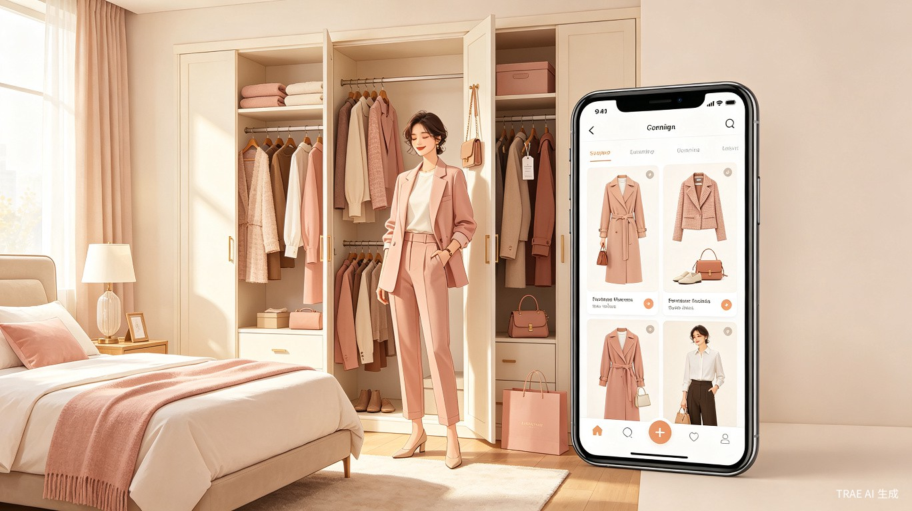
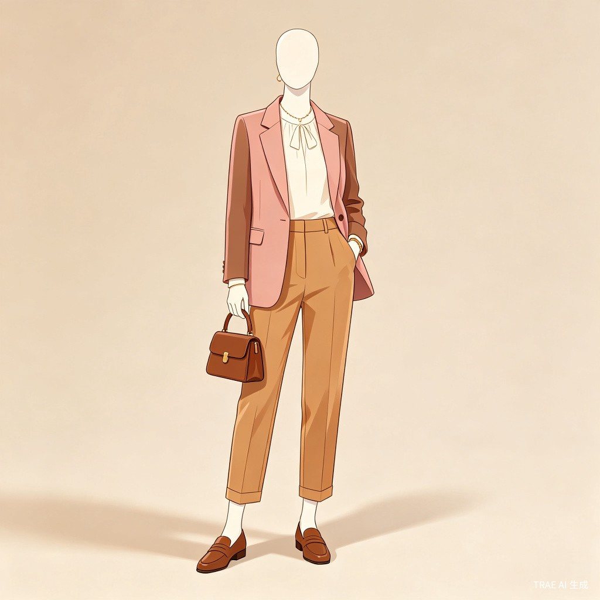

早起不用想，也能穿得有表达
一款面向早起上班族和注重仪表人群的穿搭指南 APP。它读取购物平台下单数据，结合用户已拥有的衣服，在每天早晨生成可直接照穿的搭配，并推荐真正补齐衣橱的单品。
产品核心不是让用户买更多衣服，而是让每一件衣服更常被想起、更容易被穿出门，把停留在脑海里的审美融入日常生活。

从痛点开始
用户并非没有衣服，也不是没有审美，而是在早晨这个高压、低耐心的时段里，缺少一个能把衣橱、场景和购买记录连接起来的“搭配代理”。
早起时间稀缺
上班前的十分钟被洗漱、通勤、早餐挤满，搭配衣服变成最容易被压缩的决策，最后只能回到黑白灰和百搭款。
搭配效果靠想象
用户知道单品好看，却难以在脑中判断颜色、版型、材质是否协调，担心出错就不敢尝试。
衣服被遗忘
漂亮衣服买回来以后缺少搭配入口，逐渐变成衣橱里的“沉默资产”，看似拥有，实际很少被穿。
衣橱不是收纳空间，而是一个尚未被唤醒的表达系统。
目标用户
产品服务的是想穿得更丰富，但不想把早晨耗在选择上的人。他们需要轻量、可靠、能直接落到当天出门场景的建议。
| 用户类型 | 典型场景 | 核心需求 | 产品回应 |
|---|---|---|---|
| 早起上班族 | 早晨时间紧，通勤前需要快速决定穿什么。 | 不用思考太久，也不想穿得过于随便。 | 每日生成 1 套主推搭配和 2 套备选搭配，按天气、日程、舒适度排序。 |
| 喜欢多样化穿搭的人 | 衣服很多，但总是想不起某些单品，也不知道如何组合。 | 提高衣物使用率，尝试更多风格。 | 按“最近少穿”“可搭配潜力”“风格新鲜度”主动唤醒衣橱里的低频单品。 |
| 注重仪表的讲究人 | 会议、约会、出差、聚会等场景切换频繁。 | 搭配要符合场合，同时保留个人审美。 | 把场景标签和个人偏好写入推荐逻辑，减少不合时宜的穿搭建议。 |
| 购物后容易闲置的人 | 看到漂亮衣服就下单，收到后发现不好搭。 | 知道新买单品可以和什么搭，也知道缺什么。 | 读取下单数据生成“到货后搭配说明”，并推荐可补齐风格的单品。 |
产品形态
APP 以“每日穿搭”为主入口，以“我的衣橱”和“补齐单品”为辅助入口。用户不需要从零录入所有衣服，系统先从购物平台订单中识别，再由用户逐步修正。
今日主推
轻正式通勤
早会 · 22℃ · 步行 12 分钟

订单识别衣橱
授权后读取购物平台下单数据，识别服装、鞋包、饰品的品类、颜色、季节、风格和购买时间，自动生成初始衣橱。
每日自动搭配
结合天气、日程、通勤方式和用户偏好，生成当日推荐。用户可以选择“稳妥一点”“更有风格”“适合拍照”等不同倾向。
低频衣物唤醒
系统发现长期未穿但仍有搭配潜力的衣服时，会把它们纳入推荐，让衣橱不再只服务少数百搭款。
缺口式购买推荐
推荐单品不是泛泛种草，而是说明“为什么缺它”：它能和哪些已有衣物搭配、能覆盖哪些场景、是否值得购买。
使用路径
产品把复杂的搭配判断藏在后台，把前台体验压缩成几个足够轻的动作：看一眼、换一个、穿出门、顺手补齐。
同步衣橱
连接购物平台订单，系统生成衣物清单；用户只需删除不再拥有的物品，补充线下购买的关键单品。
设置今日场景
选择上班、会议、约会、聚会、休闲等场景，也可以让日历自动判断。
获得搭配
系统给出主推搭配、备选搭配和替换项，显示每件单品来自哪里、是否已拥有。
补齐单品
当搭配缺少关键物品时，跳转购买页，并说明该单品能提升哪些已有衣服的使用率。
价值与意义
穿搭建议的价值不只在效率，也在表达。它让人更容易把“我想成为的样子”带进每天的生活里。
减少早晨决策压力，提升衣物利用率，让漂亮但难搭的衣服重新进入日常。用户不必牺牲效率，也能拥有更丰富的形象表达。
从“卖单件商品”转向“补齐用户真实衣橱需求”。推荐更接近具体搭配场景，转化理由更清晰，退货风险也更低。
日常穿着承载着多样化的美。产品降低尝试门槛，让审美不只停留在收藏夹和想象里，而是自然出现在街道、电梯和办公室。
让穿搭从“早晨难题”变成“日常灵感”
衣橱晨间引擎把已购买、已拥有和将要购买的衣物连成一个系统。它帮助用户省下时间，也帮助每件衣服找到更合适的出场机会。